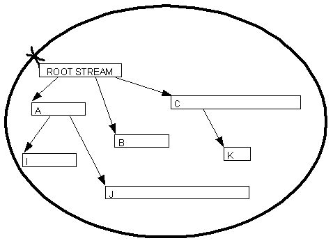

|
| |
The main characteristic of a direct file store is that streams can be created and objects externalised to them but, once the streams have been committed and closed, they cannot subsequently be changed, i.e. streams cannot be replaced, deleted, extended or changed in any way.
A direct file store is useful for the type of application which treats the in-memory copy of its data as its prime copy, such as a word processor which implements the classic load/save paradigm. In this paradigm:
application data is first created, in an internal, non-persistent, form — i.e., in RAM
when the file is first saved, the data is externalised to the file store. When saving its data, an application writes the whole object network forming the data to a new direct file store, replacing any existing file of the same name. The last stream written is always the root stream.
the application can exit
when the application is started again, it can open the file store and read in the persistent data. It need not load the whole object network into memory; the loading of objects can be deferred by using Swizzles.
the data is edited in its internal, non-persistent form
when data is saved again, the old file is erased (or renamed for safety!) and completely rewritten
With a direct file store, a stream may not be appended once it has been written and closed. Writing to different streams may not be interleaved. The root stream must be the last stream to be written. The direct file store is very efficient as the allocation of new streams, and finding existing streams, are trivially mapped onto the most efficient operations of the underlying file system.
For this type of application, the most efficient file format is obtained when all the data is written in sequence to the file. Any references within the file are to data which was written earlier. When reading the file back, it is read in several sections starting with a section that is at the end of the file.
A typical relationship between a direct file store and its contained streams is shown below. In this stream network streams I and J must be written before stream A; stream K must be written before stream C; streams A,B and C must be written before the root stream.

Direct file stores are encapsulated by the
CDirectFileStore class.
Copyright ©2002 Symbian Ltd. 6.1-00174 |
|